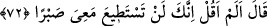
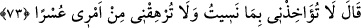

çıkıldığı vakitte durup düşünmek (tevakkuf) gerekiyordu.
Hâfız der ki:
Neden ve nasıldan dem vurma ki makbûl kul,
Cânânın söylediği her sözü candan kabûl eder.
72. (Hızır:) “Ben sana, benimle beraberliğe sabredemezsin, demedim mi?” dedi.
Hızır (a.s) Mûsâ (a.s.)’ a: “Ben sana, benimle beraberliğe sabredemezsin, demedim
mi? dedi.” Yâni benimle sabra asla gücün yetmez demiştim. Bu cümle, Mûsâ (a.s.)
sözünde durmamasını reddetmek için Hızır (a.s.)’ın önceki sözünü hatırlatmadır.
73. Mûsâ: “Unuttuğum şeyden dolayı beni muaheze etme; işimde bana güçlük
çıkarma.” dedi.
“Mûsâ:” O söz hatırımdan çıkmış: “Unuttuğum şeyden dolayı beni muaheze etme”
yaptıklarının hikmetini sen açıklamadan önce sormamaya dair tavsiyeni unuttuğum için
beni sorgulama. Çünkü unutan kimse kınanmaz, dedi. Nitekim Sahîh-i Buhârî’deki bir
hadiste: “Mûsâ (a.s.)’ın birinci îtirâzı bir unutma, ikincisi şart, üçüncüsü ise kasdî
idi.”[210] buyrulmuştur.
“İşimde bana güçlük çıkarma, dedi.” “ el-İrhâk” insana güç yetiremeyeceği
sorumluluğu yüklemek demektir. Yâni sana tâbî olmayı bana zorlaştırma, onu bana
kolaylaştır. Ben seninle berâber olmak istiyorum. Onun için ise senin hoşgörü, af ve
münâkaşayı terk etmekten başka yol yok.
Benim cürüm ve günahımın yüzüne af eteğini ört
Niçin ve neden böyle ettin diye kulun yüzünün suyunu dökme
et-Te’vîlâtü’Necmiyye’de şöyle der: “Şeyhin âdâbından ve şeyh olmanın şartlarından
biri de, müridi kabul etmeye hırslı olmamaktır. Bilakis onu nefret ettirmek için değil,
müjdelemek üzere bu taleb yolunun çok ince olduğunu, Matlûb’un aziz olduğu kadar ona
nail olmanın zorluklarını da haber vermelidir. Şâyet onu dâvâsına sâdık, arzusuna
rağbetli ve başka şeylerden yüz çevirmiş bulursa, iyi bir şekilde kabul edip ikâmet ve
geçimini üzerine almalı, velîsi gibi onunla ilgilenmeli, evlâdı gibi terbiye etmeli,
âbidlerin edebleriyle edeblendirmelidir.